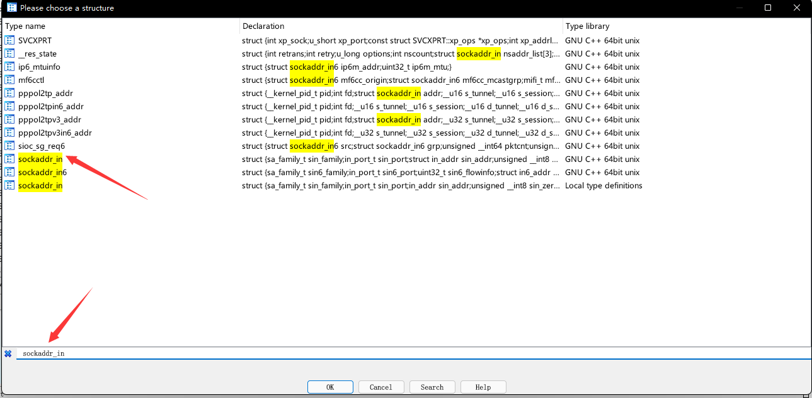
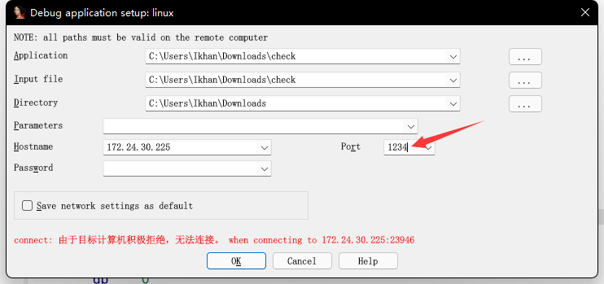

# 2022DASCTF X SU 三月春季挑战赛
# login
玩逆向有史以来做的最难的一道题
主要知识点 Socket 通信 RSA 加密 HILL 加密 魔改 AES 加密
[附件下载](链接：https://pan.baidu.com/s/1_zUg4ZrYmB1hPbHJbC4s1Q?pwd=1w3e
提取码：1w3e
-- 来自百度网盘超级会员 V2 的分享)
# 查壳
无壳 64 位，拖进 IDA
# Socket
拖进 IDA，
根据经验可以判断这两个函数分别为 exit () 和 printf ()
观察其他函数，点进去发现
发现很多特殊的函数 sys_* , 根据经验可以判断该种函数为系统函数，不可能是作者自己编写的
可以尝试搜索一下，发现是 Socket 函数
Socket 技术详解 Socket 相关函数
参考完上面的两篇博文就可以发现很多未解析的函数都是 Socket 函数
之后继续对 IDA 未解析的函数进行修复，得到最终的反汇编代码
还有一个细节，以 socket_bind 函数为例
socket 是通过套接字传递信息，而且重要的 ip 地址以及端口信息都保存在关键的结构体中，以便确定与之通信的计算机
这里的 sockaddr 就是保存信息的结构体，但是 IDA 并没有将它解析出来，我们手动添加结构体 socketaddr_in 结构体
具体操作 shift+F9 右键 add 结构体

添加之后，找到 bind () 函数，将第二个参数解析为对应的结构体
解析成功之后就可以看到关键的信息
能够看到 Socket 通信的端口 1234
# 实现逻辑
前一个阶段找到了客户端和服务端通信的端口 1234，由于客户端和服务端都运行在本地，所以 IP 地址也就是
127.0.0.1 本机地址
尝试在 1234 端口下开启单步调试

利用端口 1234 开始单步调试
这里提示需要输入参数 IP 地址才能运行 login
大致的逻辑就是 login 运行后，服务端将字符串发送到客户端，提醒用户输入 token 和 password
接收到用户的输入之后，再将得到的数据发送到服务端进行对比识别
进入到关键的对比函数
刚开始是不知道 RSA 加密以及 HILL 加密的，进入这两个函数分析
# RSA
这里发现了特殊值，直接谷歌搜索 0x10001
就能知道 0x10001 是 RSA 加密的公钥，后面的函数
是将一个字符串转换成 16 进制数，当做私钥
而前面的一个很大的数就是 RSA 中需要因式分解的大质数
通过 yafu 工具或者在线因式分解
import gmpy2 | |
p = 98197216341757567488149177586991336976901080454854408243068885480633972200382596026756300968618883148721598031574296054706280190113587145906781375704611841087782526897314537785060868780928063942914187241017272444601926795083433477673935377466676026146695321415853502288291409333200661670651818749836420808033 | |
q = 133639826298015917901017908376475546339925646165363264658181838203059432536492968144231040597990919971381628901127402671873954769629458944972912180415794436700950304720548263026421362847590283353425105178540468631051824814390421486132775876582962969734956410033443729557703719598998956317920674659744121941513 | |
n = p * q | |
e = 0x10001 | |
c = b'By reading we enrich the mind, by conversation we polish it.' | |
c = int.from_bytes(c, 'little') | |
#这里要多试一下，确定是大端序还是小端序 | |
d = gmpy2.invert(e, (p - 1) * (q - 1)) | |
m = gmpy2.powmod(c, d, n) | |
print(m) | |
#11963777321199993924175387978397443935563034091716786597947508874393819454915798980986262132792605021295930274531653741552766395859285325677395421549163602968276475448835066393456449574469736327622969755801884982386140722904578598391534204834007447860153096480268812700725451958035204357033892179559153729604237187552716580637492579876006993181920209114166153317182827927606249871955662032809256743464460825303610341043145126848787575238499023185150429072724679210155061579052743238859739734301162335989939278904459012917375108407803445722785027315562371588439877746983153339473213449448259686486917983129418859935686 |
# HILL
刚开始不知道 HILL 加密，进入到函数里面
还有那个 rand () 函数，之前是不知道 rand (), 也是看了 p 师傅的讲解才知道，当然，rand () 函数一般为了限定随机数的范围都是要 % 某个值，所以也能猜到这个函数是 rand ()，还有一个要注意的点就是该函数是在 Linux 环境下生成，所以编写脚本的时候也要对应的在 Linux 环境下
所以这个 rand () 产生的数就是我们的密文，%257 和 %255 只是为了确保两个值在同一个范围内
逻辑就理的很清楚，矩阵运算之后与密文比较
#include <stdio.h> | |
#include <stdlib.h> | |
#include <string.h> | |
//Linux 环境下运行 | |
int main(void) | |
{ | |
int i; | |
unsigned char hillData[] = | |
{ | |
81, 50, 210, 2, 195, 45, 149, 185, 249, 120, 213, 20, 227, 41, 66, 32, 81, 59, 21, 98, 52, 130, 180, 192, 46, 154, 253, 232, 186, 213, 236, 7, 72, 106, 84, 136 | |
}; | |
unsigned char rsaData[] = "11963777321199993924175387978397443935563034091716786597947508874393819454915798980986262132792605021295930274531653741552766395859285325677395421549163602968276475448835066393456449574469736327622969755801884982386140722904578598391534204834007447860153096480268812700725451958035204357033892179559153729604237187552716580637492579876006993181920209114166153317182827927606249871955662032809256743464460825303610341043145126848787575238499023185150429072724679210155061579052743238859739734301162335989939278904459012917375108407803445722785027315562371588439877746983153339473213449448259686486917983129418859935686"; | |
unsigned char ivk[48] = { 0 }; | |
for ( i = 0; i < 36; i++ ) | |
printf("%d, ", rand() % 255); | |
puts("\n"); | |
int v5; | |
for ( i = 0; i <= 47; ++i ) | |
{ | |
v5 = rand(); | |
if ( (i & 1) != 0 ) | |
{ | |
ivk[i] = rsaData[v5 % (sizeof(rsaData) / sizeof(unsigned char) - 1)]; | |
} | |
else | |
ivk[i] = hillData[v5 % (sizeof(hillData) / sizeof(unsigned char))]; | |
printf("%d, ", ivk[i]); | |
} | |
return 0; | |
} |
直接逆运算就是 密钥矩阵先取逆然后与密文相乘
就可以自己先写一个 rand () 生成密文，然后利用在线矩阵计算工具
x = Matrix(GF(257), [[113, 219, 37, 46, 122, 15], [76, 163, 106, 34, 170, 41], [110, 27, 169, 122, 138, 39], [47, 128, 240, 14, 170, 86], [247, 89, 88, 0, 169, 242], [246, 154, 78, 28, 72, 201]]) | |
enc = Matrix(GF(257), [[163, 151, 162, 85, 83, 190], [241, 252, 249, 121, 107, 82], [20, 19, 233, 226, 45, 81], [142, 31, 86, 8, 87, 39], [167, 5, 212, 208, 82, 130], [119, 117, 27, 153, 74, 237]]) | |
flag = x.inverse()*enc | |
print(flag) |
得到
再转成 16 进制得到密码
5132d202c32d95b9f978d514e3294220513b15623482b4c02e9afde8bad5ec07486a5488
得到 token 和 password 之后再运行程序测试一下
发现 token 和 password 都是正确的
接着分析下面的加密
# 魔改 AES
首先分析一个函数，该函数的作用即为将数组的两个元素合并成一个元素
然后我们继续查看客户端传入到服务端的数据并把他们两两合并成一个新的数组
我们直接搜索 52 09 6a d5 30
发现就是 AES 加密
AES 加密详解
后面继续分析
发现又有一个 rand () 函数，而且经过实验，rand 函数在同一个程序里面即使重新调用，之前的值也会保留，也就是说，这次 rand 生成的值还是得在 rand 生成值 36 位之后找，所以最后测试密文的时候前面还是要加循环将前 36 个 rand 值踢掉
这个循环体还有一个点就是
他会在第 16 位时进入另一个分支
也就是说，前 16 位是用的 key 后面 36 位是 iv (这也是 AES 的特点)
#include <stdio.h> | |
#include <stdlib.h> | |
#include <string.h> | |
int main(void) | |
{ | |
int i; | |
unsigned char hillData[] = | |
{ | |
81, 50, 210, 2, 195, 45, 149, 185, 249, 120, 213, 20, 227, 41, 66, 32, 81, 59, 21, 98, 52, 130, 180, 192, 46, 154, 253, 232, 186, 213, 236, 7, 72, 106, 84, 136 | |
}; | |
unsigned char rsaData[] = "11963777321199993924175387978397443935563034091716786597947508874393819454915798980986262132792605021295930274531653741552766395859285325677395421549163602968276475448835066393456449574469736327622969755801884982386140722904578598391534204834007447860153096480268812700725451958035204357033892179559153729604237187552716580637492579876006993181920209114166153317182827927606249871955662032809256743464460825303610341043145126848787575238499023185150429072724679210155061579052743238859739734301162335989939278904459012917375108407803445722785027315562371588439877746983153339473213449448259686486917983129418859935686"; | |
unsigned char ivk[48] = { 0 }; | |
for ( i = 0; i < 36; i++ ) | |
printf("%d, ", rand() % 255); | |
puts("\n"); | |
int v5; | |
for ( i = 0; i <= 47; ++i ) | |
{ | |
v5 = rand(); | |
if ( (i & 1) != 0 ) | |
{ | |
ivk[i] = rsaData[v5 % (sizeof(rsaData) / sizeof(unsigned char) - 1)]; | |
} | |
else | |
ivk[i] = hillData[v5 % (sizeof(hillData) / sizeof(unsigned char))]; | |
printf("%d, ", ivk[i]); | |
} | |
return 0; | |
} |
后面就可以继续判断 AES 了
本菜鸡复现的时候也看不懂 AES，只好先挖个坑
看 P 师傅的博客之后才知道了这道题目的魔改
简单介绍一下到底魔改了什么
- S（加密盒）和 Re（解密盒）互换，也就是加密的时候用了解密盒，解密的时候用了加密盒
- 密钥扩展改变了 Rcon 轮常量值
- 再进入加密器前进行了一轮 iv 的异或（像是 ECB 模式前加了轮异或）
PS: 最大的改动是全部都是 8 位运算！！（而 AES 加密是 32 位运算，所以需要自己重写一下）
（个人感觉是如果不自己打遍 AES，审起来会比较累，同时 AES 是经常用的学习一番也是十分不错的）
最后贴上 P 师傅的解题脚本，等我学完 AES 就回来自己写一个（逃
#include <stdio.h>{{{{{}}{}{}{}{{}}{{}}{}{}{}{}{}{}{}{}/**{}{}{}{{{}}}{}{{}{{}}}